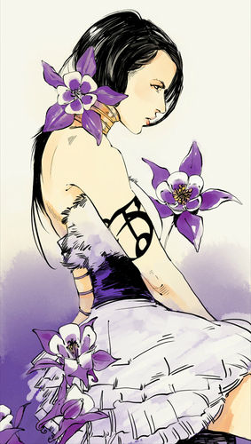

Изабель Лайтвуд
Я считала себя особенной, не видя, как меняюсь. Смотрела, как братья открывают сердца, и думала: Ведь сердце так легко разбивается! Даже когда оно заживает, прежним тебе не быть.
 Изабель Лайтвуд - Сумеречный Охотник, в настоящее время живущая в Институте Нью-Йорка. Она - единственная дочь Роберта и Мариз Лайтвуд, и сестра Алека и Макса.
Характер и привычки
Изначально Изабель разделяла снобское отношение семьи Лайтвуд по отношению к примитивным и жителям Нижнего Мира. Однако, после встречи с Клэри и Саймоном, ее отношение к примитивным стало меняться, так как она очень сблизилась с ними и даже завела романтические отношения с Саймоном. Ее взволнованная реакция, когда Саймона временно превратили в крысу, указывала, что поверхностные отношения с Саймоном уже были куда глубже, чем она рассчитывала. Несмотря на сохранение надменного отношения к Клэри и примитивным, было заметно, как на нее влияют слова Клэри в некоторые моменты, показывая, что она не так холодна сердцем, как заставляет верить окружающих.
У Изабель хорошее чувство стиля и она очень модная натура. Она так же, в каком-то смысле, ветрена. После смерти ее брата, Макса, она ложится в одну кровать с Саймоном, но не спит с ним. Изабель изображена как тщеславная и самовлюбленная, но немного недоверчивая. Она чувствительная к своему росту и желает быть ниже и более деликатной, как Клэри. Она, возможно, самая зрелая из детей Лайтвуд, и, чувствуя это, принимает что-то вроде материнской роли по отношению к ним, даже по отношению к ее старшему брату, Алеку.
Несмотря на ее самовлюбленную личность, Изабель очень верна своей семье, особенно Алеку. Она была одной из немногих людей, знающих о его ориентации, и оба они очень близки. Изабель так же обладает жестким нравом, жертвами которого становятся некоторые персонажи. Несмотря на ее зрелую и утонченную натуру, у нее есть привычка устраивать истерики и закрываться в своей комнате, когда то-то происходит неправильно, бросая вещи в людей, когда они нарушают ее одиночество. В то время, как Клэри находит ее внешнюю натуру непривлекательной, она вскоре начинает любить ее, когда узнает теплоту ее души.
Изабель очень верный друг, но непостоянна и склонна к смене настроения. Она описывается как очень кокетливая. Она встречается с многими разными парнями, особенно с теми, кого не одобрили бы ее родители. Она позже раскрывает, что делает это чтобы отвлечь их внимание от брата Алека, который является геем, чтобы их родители не заподозрили его. Это начинает показывать ее более глубокую и любящую сторону, что часто раскрывается только внутри ее семьи. Она любит своих братьев и отчаянно защищает их при угрозе. Смерть ее брата, Макса, тяжело на ней отразилась, она заставляет себя поверить, что виновата перед ним и перед Алеком, потому что проигнорировала его слова. Ее скорбь не позволила прийти на похороны, так как она считала, что не заслуживает находиться там.
Изабель так же очень осторожна когда дело касается любви. Это из-за того, что ее мать сказала ей никогда не верить мужчинам, потому что они всегда причинять ей боль. Хотя в то время она не до конца понимала значения ее слов, позже она говорит, что не знает, как по-настоящему любить, хотя ее страсть к Саймону определенно начинает ее раскрывать. Она сбита с толку, наблюдая со своими братьями, видя их отдающими себя любви. Она не понимает, как они могут раскрывать себя такой грусти.
Изабель так же скорее любит готовить, но не так хороша в этом. Ее мать, Мариз, всегда была хороша в кулинарии, но никогда не учила Изабель, боясь, что она может предаться кухне навсегда, вместо того чтобы быть отличным Сумеречным Охотником, которым она в конечном счете выросла.
Джейс однажды описал Изабель как одну из самых лучших Сумеречных Охотников, которых он знал. Она любит свою жизнь и борьбу против демонов. Она наслаждается охотой на них. Она так же часто играет "приманку" для демонов, на которых она, Джейс и Алек охотятся. Она очень живая девушка, которой нравятся вечеринки, кокетство и одежда.
Внешность
Изабель описывается как прекрасная, несмотря на шрамы, оставленные на ее коже рунами Сумеречных Охотников. У нее длинные, чернильно-черные волосы и темные золотисто-карие глаза с крапинками, но окружающим часто кажется, что они просто черные. У нее тонкие брови, бледная, румяная кожа как и у ее брата Алека. Говорят, что она сильно напоминает свою мать, так сильно, что Джослин Фрэй ошибочно приняла ее за ее Мариз когда они впервые встретились. Она довольно высокая (175 см), выше, чем большинство парней, и очень стройная. Несмотря на ее внешность, Изабель сильно завидовала Клэри и другим девушкам как она, которые были маленькими и компактными, в прошлом; хотя она довольна своей внешностью, она считала это помехой - быть выше, чем большинство парней.
Изабель известна как модница и обычно носит платья; Клэри даже один раз сказала, что редко видела Изабель в чем-то, кроме платьев, хотя известно, что она также носит повседневную одежду. У Изабель также есть страсть к очень высоким каблукам.